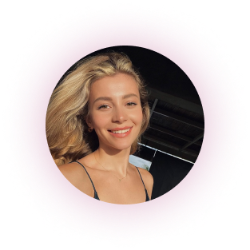
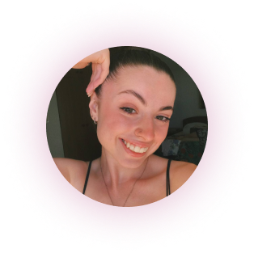
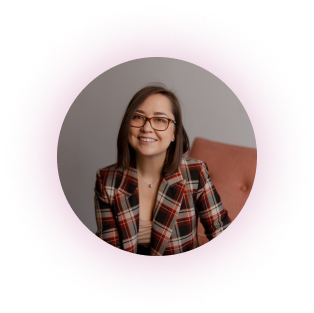
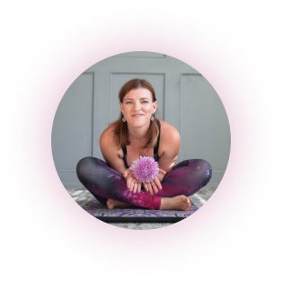
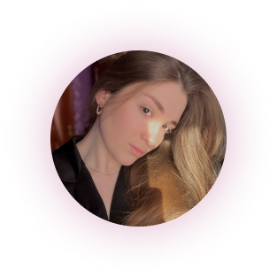
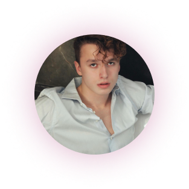
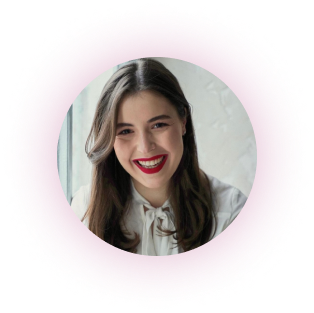

<section class="speakers" id="speakers">
  <div class="container">
    <div class="title speakers-title">Запрошені спікери</div>

    <div class="speakers-wrapper">
      <div class="speakers-card">
        <div class="speakers-img">
          
        </div>
        <div class="speakers-card-title">Поліна Пузирна</div>
        <div class="speakers-card-descr">Практикуючий психолог. Працює в напрямках когнітивно-поведінкової,
          емоційно-образної
          та арт-терапії.</div>
      </div>
      <div class="speakers-card">
        <div class="speakers-img"></div>
        <div class="speakers-card-title">Анастасія Білак</div>
        <div class="speakers-card-descr">Легкоатлетистка, танцюристка, волейболістка, і пауерліфтерка.
          Навчає жіночому «розумному» фітнесу.
          Працює персональним тренером.</div>
      </div>
      <div class="speakers-card">
        <div class="speakers-img"></div>
        <div class="speakers-card-title">Євгенія Кушмирук</div>
        <div class="speakers-card-descr">Консультантка позитивної психотерапії, членкиня Української асоціації
          Позитивної психотерапії, Української спілки психотерапевтів та Асоціації EMDR в Україні.</div>
      </div>
      <div class="speakers-card">
        <div class="speakers-img"></div>
        <div class="speakers-card-title">Олександра Кардач</div>
        <div class="speakers-card-descr">Сертифікована йога-інструкторка міжнародного стандарту RYS-100 та RYT-200.
          Авторка онлайн-школи «Твоя Йога».
          Багаторазова учасниця йогічних конференцій та викладачка на йога-фестивалях. </div>
      </div>
      <div class="speakers-card">
        <div class="speakers-img"></div>
        <div class="speakers-card-title">Аліна Ткач</div>
        <div class="speakers-card-descr">Медичний психолог-практик. Студентка Вінницького національного медичного
          університету.</div>
      </div>
      <div class="speakers-card">
        <div class="speakers-img"></div>
        <div class="speakers-card-title">Святослав Багряк</div>
        <div class="speakers-card-descr">Професійний спортсмен. Займався дзюдо, плаванням та настільним тенісом.
          Займається Муай-Тай та воркаутом.
        </div>
      </div>

      <div class="speakers-card">
        <div class="speakers-img"></div>
        <div class="speakers-card-title">Аня Бондар</div>
        <div class="speakers-card-descr">Практикуючий психолог,
          сертифікований сексолог-консультант, майстер еннеаграми та коуч.
        </div>
      </div>
    </div>
  </div>
</section>
